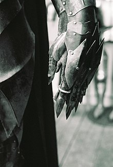

Tudo sobre Senhor dos Aneis
O Senhor dos Anéis (The Lord of the Rings, no original) é um livro de alta fantasia, escrito pelo escritor britânico J. R. R. Tolkien. Escrita entre 1937 e 1949, com muitas partes criadas durante a Segunda Guerra Mundial,[1] a saga é uma continuação de O Hobbit (1937). Embora Tolkien tenha planejado realizá-la em volume único, a obra foi originalmente publicada em três volumes (The Fellowship of the Ring, The Two Towers e The Return of the King) entre 1954 e 1955, com cada volume contendo dois livros cada, e foi assim, em três volumes, que se tornou popular. Desde então, a obra foi reimpressa várias vezes e traduzida para mais de 40 línguas, vendendo mais de 160 milhões de cópias,[2] tornando-se um dos trabalhos mais populares da literatura do século XX.
O "Um Anel" é o elemento central da saga. No anel, em inscrições no alfabeto Tengwar com versos na língua proibida de Mordor, pode-se ler: "Um Anel que a todos rege, Um Anel para achá-los, Um Anel que a todos traz, para na escuridão atá-los". Palavras em contínuo tanto na parte de dentro do anel, como na parte externa do anel. Isso se apresenta no início do livro, na apresentação da trilogia, no original em primeira edição em Inglês. Na saga, os vilões se autodestroem pelo próprio porte do anel.
Sinopse
Frodo Bolseiro é um hobbit do Condado, que recebe de seu tio Bilbo um anel de rara beleza. Esse anel tem uma longa história: foi roubado de uma criatura chamada Gollum (como relatado no livro O Hobbit), e desde então ele tem sido guardado por Bilbo.
Estrutura da obra e plano de fundo da história
Já foi dito que a obra deveria ser lançada em um único volume, mas foi dividido em três como forma de baratear os custos (havia racionamento de papel na Inglaterra do pós-guerra). Cada volume é dividido em dois tomos ou "livros". O primeiro volume, A Sociedade do Anel, publicado em 1954, contém um prólogo, no qual são dadas as características dos Hobbits; O segundo volume, As Duas Torres, publicado alguns meses depois de A Sociedade do Anel, também em 1954, continua a história original com mais personagens; A saga termina com a publicação em 1955 do terceiro volume, intitulado O Retorno do Rei, que contém diversos apêndices explicativos sobre a história, as línguas, a cronologia da narrativa e outras informações adicionais sobre a mitologia criada por Tolkien para a sua Terra-Média.